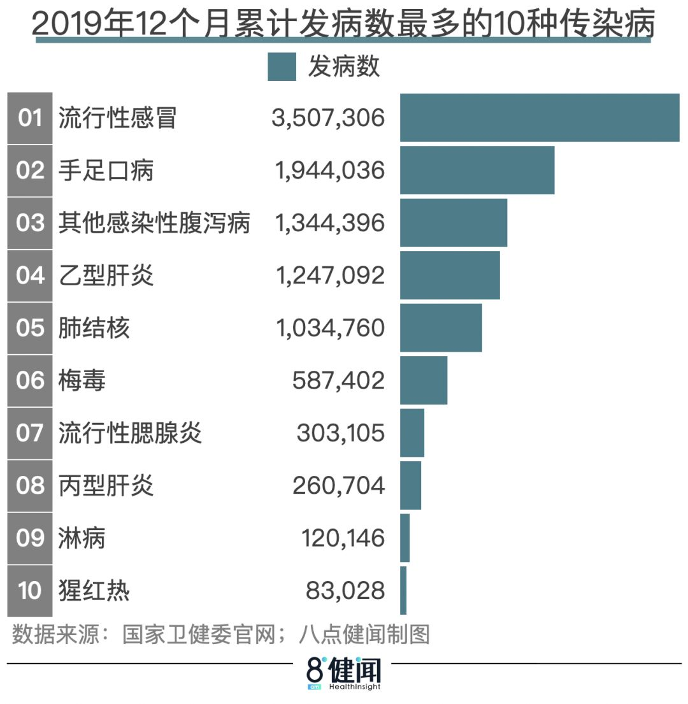
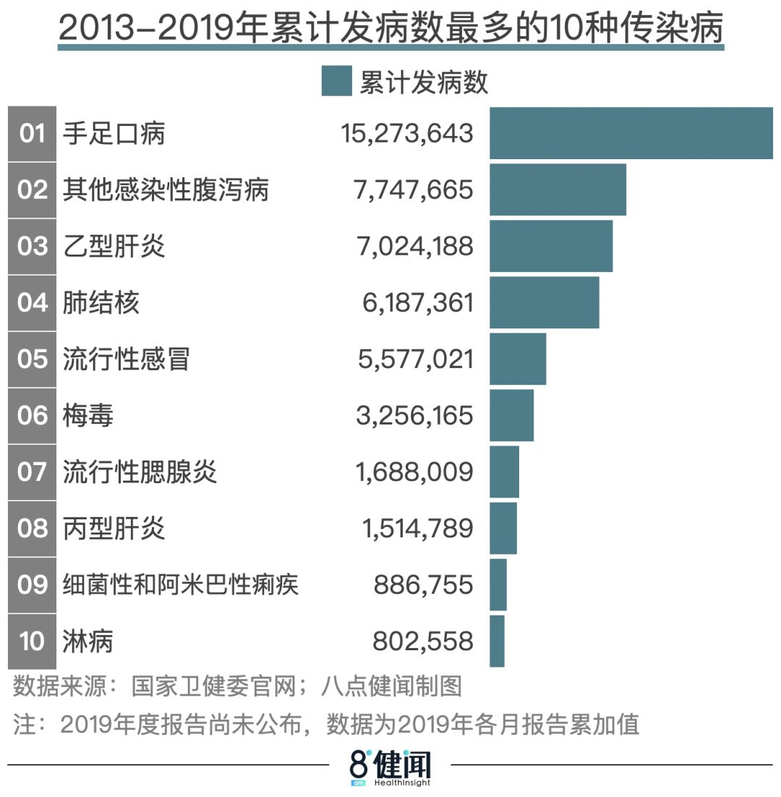
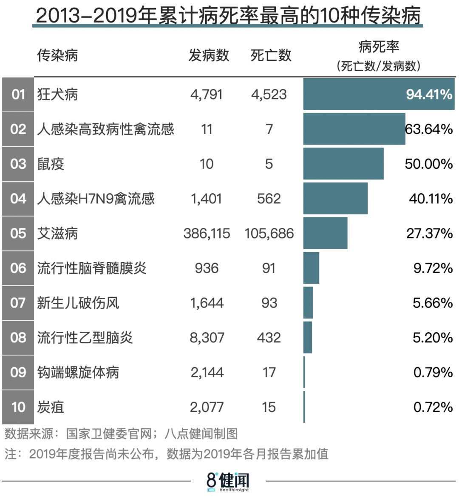
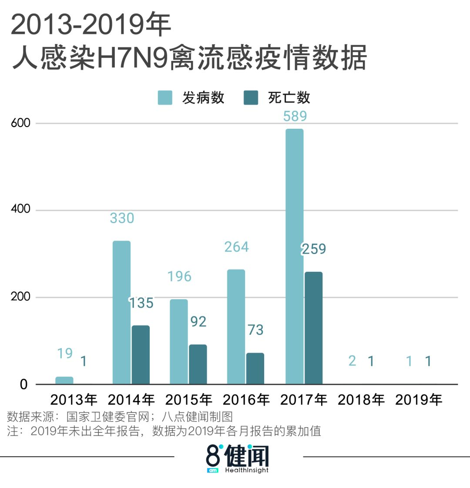
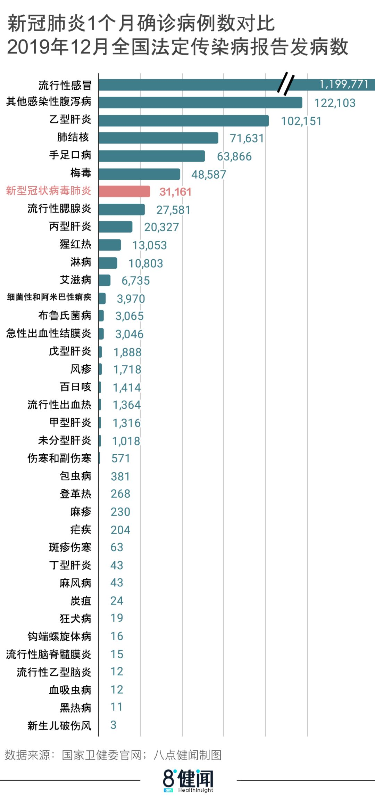

应对COVID-19（新冠病毒）：各国政府严控，市场有所放松
原文链接 备份链接 市场反馈认为，公共卫生事件对经济的影响有限；在应对疫情的关键时刻，政治和金融市场应对疫情展示出截然不同的态度 文 |《财经》特派记者 金焱 发自华盛顿 编辑 | 苏琦 2月11日，世界卫生组织通过社交媒体推特发布其确定 …


新型冠状病毒感染的肺炎现已纳入《传染病防治法》规定的乙类传染病。由于是一种新型病毒，且传染性极强，疫情来势凶猛，初期难免引起人们的恐慌情绪。但从已公布的疫情数据来看，新冠病毒肺炎发病数不如流感和乙肝等常见传染病，死亡率也处在一个相对较低的水平。


我国《传染病防治法》规定的传染病，目前包括甲乙丙三类。按危害程度排序，甲类>乙类>丙类。

列入甲类传染病的鼠疫、霍乱，目前在国内已经基本绝迹。乙类传染病中的非典型性肺炎（SARS），在2003年疫情扑灭之后，曾于2004年4～5月有过小范围复发，之后至今再未见报告。
根据国家疾控部门定期公布的全国（不含香港、澳门特别行政区和台湾地区）法定传染病疫情报告，乙类和丙类传染病中，除新冠病毒肺炎外，目前发病数仍较多的有：流行性感冒、感染性腹泻、病毒性肝炎、肺结核、手足口病、梅毒、流行性腮腺炎、猩红热、淋病、艾滋病等。

△ 来自国家卫健委官网
从1月底发布的2019年12月疫情报告可以看到：发病数最多的是流行性感冒，达到1,199,771例，其次是其他感染性腹泻病（122,103例）、乙型肝炎（102,151例）；死亡人数最多的则是艾滋病（2,284例），其次是肺结核（230例）；病死率最高的是狂犬病，报告发病数19例，死亡人数30人（应包含12月之前发病的病例）。
虽然2019年全年的传染病数据尚未公布，但从逐月累计数字，也可以看到过去1年报告传染病发病数和死亡数的大致情况（注：年度数据可能与累加数字存在一定偏差，以官方正式公布为准）。


拉长时间跨度，回顾2013-2019年的疫情数据，累计报告发病数最多的是手足口病（超过1500万例），死亡数最多的是艾滋病（10万余例）。


2013-2019年的传染病疫情数据中，病死率最高的是狂犬病，发病数4,791例，死亡数4,523例。
鼠疫、人感染高致病性禽流感等烈性传染病，虽然近年来发病数极少，但是一旦发生疫情，病死率也极高。它们对于人类的威胁，始终没有完全解除。

△ 病死率数据根据当期报告发病数和死亡数计算，仅供参考
2013年至2019年，发病数最多的几种传染病中，每年报告的乙肝、肺结核、其他感染性腹泻发病数都比较平稳，约在100万上下；手足口病发病数波动相对较大，最低180余万，最高超过270万。

值得注意的是，过去几年，流行性感冒的发病数增长明显，尤其是2019年增幅最大，从2018年的70余万，陡增至350万。尽管如此，这个数字可能仍然低于实际感染流感的病例数。一般流感如无并发症，通常可以在一周内好转，病死率很低（2019年12个月累计报告流感350万例，死亡302例，病死率约为0.01%），而轻症流感与普通感冒相似，两三天即可恢复。也就是说，不是所有流感患者都会到医院诊治，难以纳入统计数字。
与流感相反，2013年至2019年，病死率最高的狂犬病，发病数和死亡数都呈逐年下降趋势。

人感染H7N9禽流感病死率也非常高。过去几年中，发病数最多的是2017年，涉及安徽、四川、贵州、河北、北京等省市，全年共报告病例589例，死亡259例。但疫情很快得到控制，此后两年，报告发病数字均只有1到2例。

根据近年数据，病死率排在H7N9之后的另一大传染病是艾滋病。2013年至2019年，每年死亡人数都在万人以上，且发病数、死亡数都在逐年递增。

综上可见，高发病率、高死亡率的各类传染病，一直存在于我们周围。有的发病数持续增长，比如流行性感冒和艾滋病；有的发病数逐年降低，比如狂犬病；有的始终保持在较高的发病水平，比如手足口病、病毒性肝炎（尤其是乙肝）、肺结核等。
和这些传染病相比，新冠病毒肺炎是什么水平？
从1月7日专家组初步判定“不明原因肺炎”的病原体为新型冠状病毒，往后推一个月，也就是截止到2月6日，全国累计报告新冠病毒肺炎确诊病例31,161例，累计死亡病例636例。
把这一个月的发病数据，放到距离最近的2019年12月全国传染病疫情数据中做对比，新冠病毒肺炎一个月发病数约为乙肝（102,151例）的30%、肺结核（71,631例）的43.5%。

不过，由于新型冠状病毒肺炎疫情在武汉集中爆发，来势凶猛，超出当地既有医疗资源的应对能力，统计数字可能无法完全覆盖实际发病人群。比如，根据2月13日的通报，湖北省2月12日新增确诊病例将近1.5万，数倍于前日水平，就是因为放宽了确诊依据，只要患者在疑似病例基础上具有肺炎影像学特征，无需病毒核酸检测即可被列入“临床诊断病例”。
再来看病死率。此次新冠肺炎病死率，湖北地区>全国>非湖北地区。原因不难理解，因为湖北疫情最重，超出了当地医疗资源承载能力，一部分患者未能得到有效的治疗。根据腾讯新闻的实时疫情追踪数据，可以明显看出这种差异。

△ 来自腾讯新闻
如上图所示，湖北地区的新冠肺炎病死率，在1月下旬有过一段超过5%的高点，之后逐渐回落，截至2月12日，已经不高于3%。非湖北地区，病死率基本不超过0.5%。截至2月12日，全国新冠肺炎总体病死率约为2.2%。
钟南山院士曾表示，绝对来比的话，新冠肺炎的病死率比SARS还是低的（世卫组织报告给出的中国内地SARS致死率为7%）。对比前文提到的其他传染病，新冠肺炎的病死率也远低于人感染禽流感、艾滋病等。但正如钟南山院士所说，“我们不能因为它低就放松警惕”。
新冠肺炎疫情带来的影响有目共睹。一鼓作气打赢这场防疫战，早日恢复正常工作和生活，是所有人的共同愿望。
刘冉|撰稿
微信号：foooorest
吴晔婷|制图
微信号：wytlucky19


我们尊重原创版权，未经允许请勿转载。
授权转载
郑琪 微信号: 1281949389
商务合作
上海：leslee 13916263824
北京：Jessie 13911125922
线索爆料、意见反馈，加入核心读者社群
请扫码联系健闻君

让朋友们看到你也在看
↓↓↓
原文链接 备份链接 市场反馈认为，公共卫生事件对经济的影响有限；在应对疫情的关键时刻，政治和金融市场应对疫情展示出截然不同的态度 文 |《财经》特派记者 金焱 发自华盛顿 编辑 | 苏琦 2月11日，世界卫生组织通过社交媒体推特发布其确定 …
原文链接 备份链接 岛语 非常时期，武汉成了全国人民挂念、祈福的城市。封城后，武汉人民的真实生活是什么样？ 正和岛自1月26日起特别推出《叶青：我在武汉疫区的第N天》专栏。叶青是一位定居武汉40年的市民，也是一名学者和官员。接下来的一段时 …
原文链接 备份链接 非常时期，武汉成了全国人民挂念、祈福的城市。封城后，武汉人民的真实生活是什么样？ 武汉在发生哪些变化？ 正和岛自1月26日起特别推出“叶青专栏”。叶青是一位定居武汉40年的市民，也是一名学者和官员。在过往多期的专栏文章 …
原文链接 备份链接 凤凰新闻客户端 凤凰网在人间工作室出品 *15分钟的路程，我花了15天时间* @高风 坐标：武汉&武汉 肺炎与爱情有2个相似之处：一是身体会有征兆，让人呼吸紧张、情绪不稳；二是无可幸免，稍没注意便会染上，但也 …
原文链接 备份链接 澎湃新闻记者 何利权 实习生 粟满莺 李佳悦 因缺乏物资，都安县医护人员自制防护用品。 因新冠肺炎确诊患者在短期内陡增，且感染人数占到所在市（州）的绝大部分，个别位置偏僻的贫困县正面临着一场艰难的“战疫”。 截至2 …